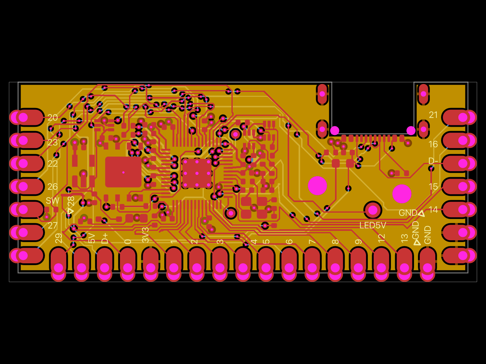

A request for an engineer's review before a first build at JLCPCB (10 boards, assembled). 20 November 2026.
A long, thin RP2040 controller for keyboards, 59.7 × 21.0 mm, 4 layers, 1.6 mm. Its circuit is Sea-Picro's (Josh Johnson's open-source RP2040 keyboard controller, CERN-OHL-S), redrawn to a new outline: castellated pins along one long edge and up both ends (the end columns 3 key widths, 57.15 mm, apart), USB-C mid-mounted in a notch on the other long edge, two M2 mounting holes.
It was made with rulecad: Sea-Picro's KiCad board read in, parts placed by rule, the rest autorouted. Sea-Picro's own tracks and vias round the RP2040 are kept exactly (but for 7 short escapes trimmed back). Inner layers: a GND plane and a 3.3 V plane.
Open it in 3D (board views, the schematic and the fab zip) · source and README, with the full pinout

| module-v0_7_1.kicad_pcb, .kicad_pro, .kicad_dru | The board in KiCad 10 (download all three into one folder) |
| module-v0_7_1.kicad_sch | A schematic generated from the netlist: correct connections, machine-drawn layout. Sea-Picro's own schematic reads better for the circuit |
| module-v0_7_1-fab.zip | What JLCPCB was sent: Gerbers and drill files plotted by KiCad, BOM and placement (CPL) |
| kicad-drc-2026-11-20.json | KiCad's design-rule check of the board, run 20 Nov with zones refilled |
| schematic.png | The schematic as a picture |
| Option | Ordered |
|---|---|
| Layers, thickness, finish | 4, 1.6 mm, ENIG |
| Vias | 0.15 mm hole, 0.3 mm pad (router vias); planes' vias 0.25/0.5 mm. 4-wire Kelvin test |
| Castellated holes | Yes, 3 edges |
| Assembly | Standard PCBA, top side, 10 boards, edge rails added by JLCPCB and removed before delivery |
| D2 (power LED) | Changed: KT-0603R red, LCSC C2286, in place of the BOM's pink OSK40603C1E (C268294, out of stock). Same 0603 footprint and resistor |
| U2 (flash) | GD25Q64CWIGR, 8 MB (the README's 16 MB is wrong) |
Castellated holes: plated holes cut in half by the board edge, so the board solders flat onto another. CPL: component placement list (position and rotation of each part). DRC: design-rule check. ENIG: a flat gold surface finish. QSPI: the RP2040's four-line bus to its external flash.
CERN Open Hardware Licence v2, Strongly Reciprocal, as Sea-Picro.